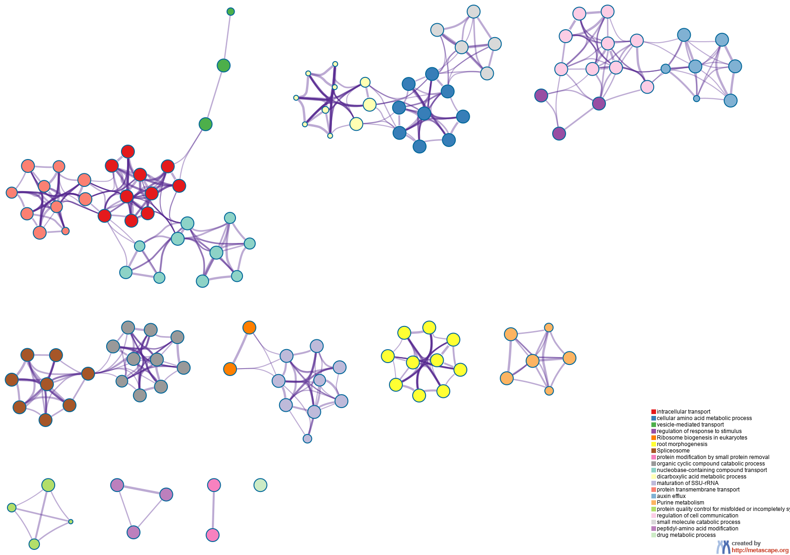
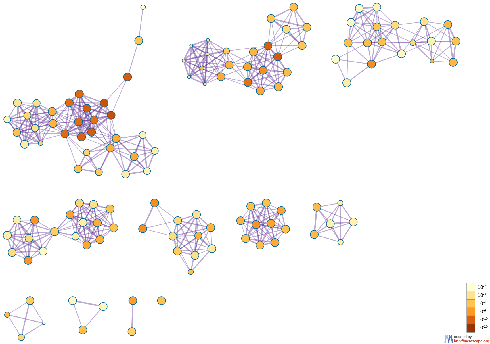

Metascape Gene List Analysis Report
metascape.org1Bar Graph Summary
Figure 1. Bar graph of enriched terms across input gene lists, colored by p-values.
{kind=link}
{kind=link}
Gene Lists
User-provided gene identifiers are first converted into their corresponding A. thaliana Entrez gene IDs using the latest version of the database (last updated on 2020-09-16). If multiple identifiers correspond to the same Entrez gene ID, they will be considered as a single Entrez gene ID in downstream analyses. The gene lists are summarized in Table 1.Table 1. Statistics of input gene lists.
| Name | Total | Unique |
|---|---|---|
| hits | 3000 | 2995 |
Gene Annotation
The following are the list of annotations retrieved from the latest version of the database (last updated on 2020-09-16) (Table 2).Table 2. Gene annotations extracted
| Name | Type | Description |
|---|---|---|
| Gene Symbol | Description | Primary HUGO gene symbol. |
| Description | Description | Short description. |
| Biological Process (GO) | Function/Location | Descriptions summarized based on gene ontology database, where up to three most informative GO terms are kept. |
| Kinase Class (UniProt) | Function/Location | Detailed kinase classes. |
| Protein Function (Protein Atlas) | Function/Location | Protein Function (Protein Atlas) |
| Subcellular Location (Protein Atlas) | Function/Location | Sucellular Location (Protein Atlas) |
| Drug (DrugBank) | Genotype/Phenotype/Disease | Drug information for the given gene as target. |
| Canonical Pathways | Ontology | Canonical Pathways |
| Hallmark Gene Sets | Ontology | Hallmark Gene Sets |
Pathway and Process Enrichment Analysis
For each given gene list, pathway and process enrichment analysis has been carried out with the following ontology sources: GO Biological Processes and KEGG Pathway. All genes in the genome have been used as the enrichment background. Terms with a p-value < 0.01, a minimum count of 3, and an enrichment factor > 1.5 (the enrichment factor is the ratio between the observed counts and the counts expected by chance) are collected and grouped into clusters based on their membership similarities. More specifically, p-values are calculated based on the accumulative hypergeometric distribution2, and q-values are calculated using the Banjamini-Hochberg procedure to account for multiple testings3. Kappa scores4 are used as the similarity metric when performing hierachical clustering on the enriched terms, and sub-trees with a similarity of > 0.3 are considered a cluster. The most statistically significant term within a cluster is chosen to represent the cluster.Table 3. Top 20 clusters with their representative enriched terms (one per cluster). "Count" is the number of genes in the user-provided lists with membership in the given ontology term. "%" is the percentage of all of the user-provided genes that are found in the given ontology term (only input genes with at least one ontology term annotation are included in the calculation). "Log10(P)" is the p-value in log base 10. "Log10(q)" is the multi-test adjusted p-value in log base 10.
| GO | Category | Description | Count | % | Log10(P) | Log10(q) |
|---|---|---|---|---|---|---|
| GO:0046907 | GO Biological Processes | intracellular transport | 154 | 6.52 | -13.49 | -9.68 |
| GO:0006520 | GO Biological Processes | cellular amino acid metabolic process | 104 | 4.40 | -10.94 | -7.61 |
| GO:0016192 | GO Biological Processes | vesicle-mediated transport | 111 | 4.70 | -10.70 | -7.58 |
| GO:0048583 | GO Biological Processes | regulation of response to stimulus | 144 | 6.10 | -6.89 | -4.33 |
| ath03008 | KEGG Pathway | Ribosome biogenesis in eukaryotes | 32 | 1.35 | -6.85 | -4.33 |
| GO:0010015 | GO Biological Processes | root morphogenesis | 66 | 2.79 | -6.65 | -4.17 |
| ath03040 | KEGG Pathway | Spliceosome | 49 | 2.07 | -6.34 | -3.93 |
| GO:0070646 | GO Biological Processes | protein modification by small protein removal | 28 | 1.19 | -5.71 | -3.32 |
| GO:1901361 | GO Biological Processes | organic cyclic compound catabolic process | 63 | 2.67 | -5.54 | -3.19 |
| GO:0015931 | GO Biological Processes | nucleobase-containing compound transport | 33 | 1.40 | -5.25 | -2.98 |
| GO:0043648 | GO Biological Processes | dicarboxylic acid metabolic process | 27 | 1.14 | -5.20 | -2.96 |
| GO:0030490 | GO Biological Processes | maturation of SSU-rRNA | 18 | 0.76 | -5.07 | -2.85 |
| GO:0071806 | GO Biological Processes | protein transmembrane transport | 29 | 1.23 | -5.01 | -2.81 |
| GO:0010315 | GO Biological Processes | auxin efflux | 9 | 0.38 | -4.76 | -2.61 |
| ath00230 | KEGG Pathway | Purine metabolism | 38 | 1.61 | -4.45 | -2.38 |
| GO:0006515 | GO Biological Processes | protein quality control for misfolded or incompletely synthesized proteins | 13 | 0.55 | -4.41 | -2.35 |
| GO:0010646 | GO Biological Processes | regulation of cell communication | 69 | 2.92 | -4.40 | -2.34 |
| GO:0044282 | GO Biological Processes | small molecule catabolic process | 51 | 2.16 | -4.29 | -2.25 |
| GO:0018193 | GO Biological Processes | peptidyl-amino acid modification | 70 | 2.96 | -4.13 | -2.14 |
| GO:0017144 | GO Biological Processes | drug metabolic process | 114 | 4.83 | -4.09 | -2.13 |
Figure 2. Network of enriched terms: (a) colored by cluster ID, where nodes that share the same cluster ID are typically close to each other; (b) colored by p-value, where terms containing more genes tend to have a more significant p-value.
|  |  |
|
|
|
Protein-protein Interaction Enrichment Analysis
For each given gene list, protein-protein interaction enrichment analysis has been carried out with the following databases: BioGrid6. The resultant network contains the subset of proteins that form physical interactions with at least one other member in the list. If the network contains between 3 and 500 proteins, the Molecular Complex Detection (MCODE) algorithm7 has been applied to identify densely connected network components.Reference
- Zhou et al., Metascape provides a biologist-oriented resource for the analysis of systems-level datasets. Nature Communications (2019) 10(1):1523.
- Zar, J.H. Biostatistical Analysis 1999 4th edn., NJ Prentice Hall, pp. 523
- Hochberg Y., Benjamini Y. More powerful procedures for multiple significance testing. Statistics in Medicine (1990) 9:811-818.
- Cohen, J. A coefficient of agreement for nominal scales. Educ. Psychol. Meas. (1960) 20:27-46.
- Shannon P. et al., Cytoscape: a software environment for integrated models of biomolecular interaction networks. Genome Res (2003) 11:2498-2504.
- Stark C. et al. BioGRID: a general repository for interaction datasets. Nucleic Acids Res. (2006) 34:D535-539.
- Bader, G.D. et al. An automated method for finding molecular complexes in large protein interaction networks. BMC bioinformatics (2003) 4:2.